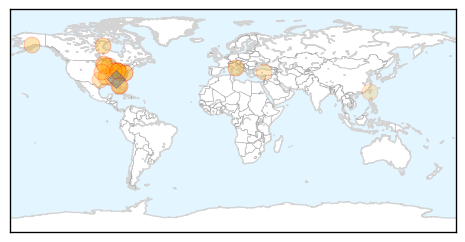
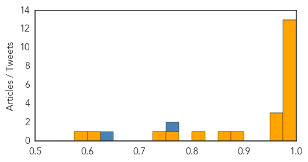
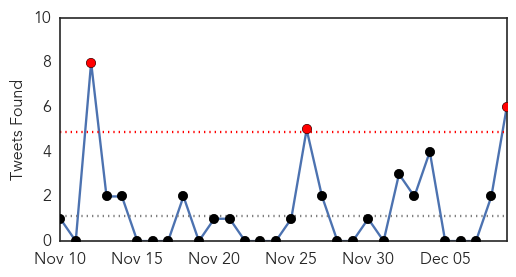
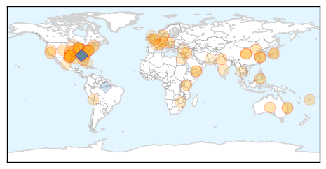

Influenza
30-Day Web Trend
8 alerts, 0 warnings

30-Day Twitter Trend
5 alerts, 0 warnings

Article Locations
Article Confidences
Top Articles:
- 1.000
- Flu-related trips to hospital climbing
- 0.999
- Influenza arrives in Steele County, health officials encourage vaccinations
- 0.999
- Norwalk Reflector: Flu-related hospitalizations increase significantly in Ohio
- 0.999
- Different flu strains send more people to hospitals
- 0.999
- Arkansans Urged to Get Flu Shot - Story
- 0.998
- CDC widens availability of free influenza treatments
- 0.997
- Health notes: Minnesota advocates flu shots
- 0.997
- WV MetroNews – Health officials promote National Influenza Vaccination Week
- 0.995
- McHenry County health officials encourage flu shots despite virus mutation
- 0.995
- Doctors: Vaccinations still best defense against the flu
- 0.995
- Department of Health Services: Flu vaccine remains the best protection against influenza
- 0.994
- Health officials encourage flu shot after Brevard death
- 0.989
- Should you get flu shot if only 50 percent effective?
- 0.970
- England health officials call on pregnant women to get flu shot in light of new report
- 0.964
- Metro flu cases skyrocketing
- 0.952
- Novartis’ Flu Vaccine Causes 13 Deaths In Italy, But EU Agency Confirms No Evidence Shows Flu Vaccine Caused The Deaths
- 0.896
- December 9, 2014 Community Happenings
- 0.858
- Brevard woman who died of flu had underlying health issues
- 0.800
- Flu Affecting Students in Richardon ISD
- 0.757
- Birmingham councilor sponsors free flu shot clinics
- 0.741
- Keep the holidays healthy by trying to avoid some common hazards
- 0.604
- U.S. suspends some Canadian poultry imports due to bird flu
- 0.591
- Bird Flu Control Zone Set up in Canada; Seven Countries Ban Imports
Top Tweets:
- 0.762
- This week (Dec 7-13) is National Influenza Vaccination Week! The big question is: Have you gotten your flu vaccine? NIVW2014
- 0.648
- Starting in 5 minutes we’ll be focusing on flu vaccine in honor of National Influenza Vaccination Week NIVW2014
Unknown
30-Day Web Trend
2 alerts, 0 warnings

30-Day Twitter Trend
3 alerts, 0 warnings

Article Locations
Article Confidences

Top Articles:
- 0.999
- Flu cases double in Dallas County
- 0.995
- Flu Patients Double up this Week in Dallas County
- 0.986
- Flu shots less effective; doctors still encourage vaccination
- 0.952
- Tarrant County reports two flu-related deaths
- 0.917
- Chicago Tribune
- 0.917
- Chicago Tribune
- 0.917
- Chicago Tribune
- 0.917
- Chicago Tribune
- 0.917
- Chicago Tribune
- 0.917
- Chicago Tribune
- 0.917
- Chicago Tribune
- 0.917
- Chicago Tribune
- 0.917
- Chicago Tribune
- 0.917
- Chicago Tribune
- 0.917
- Chicago Tribune
- 0.917
- Chicago Tribune
- 0.917
- Chicago Tribune
- 0.917
- Chicago Tribune
- 0.917
- Chicago Tribune
- 0.917
- Chicago Tribune
- 0.917
- Chicago Tribune
- 0.917
- Chicago Tribune
- 0.917
- Chicago Tribune
- 0.917
- Chicago Tribune
- 0.917
- Chicago Tribune
- 0.917
- Chicago Tribune
- 0.917
- Chicago Tribune
- 0.917
- Chicago Tribune
- 0.917
- Chicago Tribune
- 0.917
- Chicago Tribune
- 0.917
- Chicago Tribune
- 0.881
- Flu Season Returns With A Vengeance In Colorado « CBS Denver
- 0.840
- Water supply damage closes Suva clinics
- 0.839
- Had chickenpox as a kid? Watch out for shingles
- 0.822
- ICMR team to visit Tripura to study fresh outbreak of malaria
- 0.755
- KRNV, Reno, NV
- 0.725
- Chile on Alert for Porcine Epidemic Diarrhoea
- 0.698
- Turkey revisits contaminated water woes
- 0.680
- Drug candidate destroys Malaria in 48 hours
- 0.676
- Stray Dogs ‘Terrorising’ Telangana!
- 0.670
- Paying out-of-pocket for healthcare leads to 'deep impoverishment' ' UN report
- 0.670
- Paying out-of-pocket for healthcare leads to 'deep impoverishment' ' UN report
- 0.670
- Paying out-of-pocket for healthcare leads to 'deep impoverishment' ' UN report
- 0.670
- Paying out-of-pocket for healthcare leads to 'deep impoverishment' ' UN report
- 0.669
- Using genome sequencing to track MRSA in under-resourced hospitals
- 0.599
- Cucumbers Likely Cause of Jimmy John's E. Coli Outbreak
- 0.597
- Paris log fire ban goes up in flames
- 0.596
- Researchers from Western CT Health Network Biomedical Research Institute Discover Long-Dormant Viruses Could Later Affect Cancer Outcomes
- 0.595
- Zimbabwe’s Mugabe fires vice president, seven ministers
- 0.584
- Using genome sequencing to track MRSA in under-resourced hospitals
Showing top 50 articles...
Top Tweets:
- 0.955
- .@CapCareMedical is correct-flu vax can't cause flu. Some ppl may get flu-like symptoms that go away after 1-2 days NIVW2014
- 0.901
- Thank you Dr. Michael Jhung answering our flu & flu vaccine questions today in observance of NIVW2014
- 0.848
- B/c how well the flu vaccine works can vary flu antiviral drugs are a second line of defense against flu NIVW2014
- 0.838
- Lastly CDC provides many resources that can give you more information about flu and flu prevention. NIVW2014
- 0.744
- 15 de los 21 países en las Américas (@opsoms) con malaria están en camino de reducir la incidencia por 75% a finales de 2014. EndMalaria
- 0.611
- Let’s talk now about flu antiviral drugs. These are prescription meds used to treat flu. NIVW2014